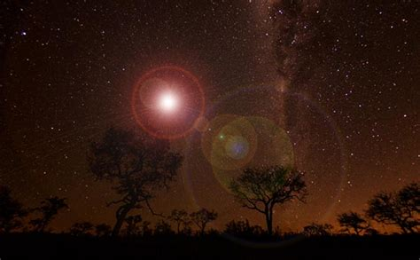

Those who have ventured to Eastern Australia's outback will often return with tales of the Min Min lights. On some nights, burning lights are said to appear in the distance but never getting closer. They keep pace alongside the car but never get any nearer, almost as if they watching. Some people believe that if you leave your car, they will stalk you through the Australian outback. But hey, don't take my word for it, unlike many of the other legends on our list, there have been documented cases of the Min Min lights. You can find footage on YouTube filmed by locals. In 2003, a report suggested that the lights are just a trick of the light that appear under certain conditions. Others believe this only deepens the conspiracy - they say that the government is just trying to shake people off the trail and not discover the true nature of the Min Min lights.
Maureen Kozicka wrote a book about the lights called The Mystery of the Min Min Light, which is a collection of stories collected from the field. The book is unavailable on Amazon, and I've been unable to locate even its ISBN number. It was published by Bolton Imprint. According to Hayman (2004), "Kozicka in her book lists the decades in which the sightings occur. The most frequent sightings (36) occur between 1950 and 1959, with only 12 between 1940 - 49 and 16 in the following decade."